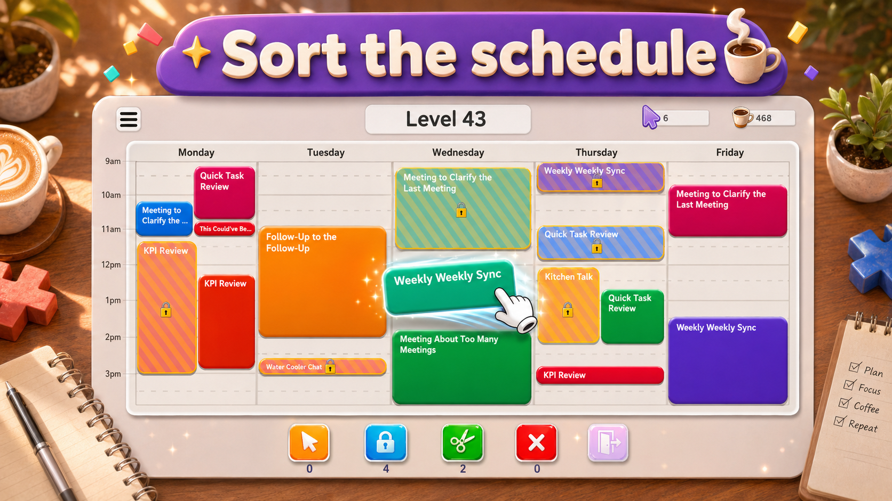

The goal of a level
Meeting Mayhem is an Android scheduling puzzle game. Each level starts with meetings that conflict. Your job is to rearrange the unlocked meetings so every block fits within the calendar and all overlaps disappear.
You do not need to recreate a particular ideal-looking schedule. The win condition is a conflict-free board. A tidier arrangement that still contains one overlap is not finished.

How to move a meeting
Touch an unlocked meeting and drag it to a different time. You can also move it to another day that is present on the board. Release it at the intended position; the calendar snaps placements to 15-minute intervals.
The meeting keeps its duration. Dragging a long meeting into a short gap does not shorten it, and dropping one meeting onto another does not swap their positions. Check the entire destination, including where the block ends.
Locked meetings cannot be moved by dragging. Treat their occupied time as fixed while planning your ordinary moves.
Read the calendar’s limits
The board can show up to five days and up to eight hours per day. The level determines how much of that calendar is available. A meeting needs to fit inside the time range and day columns actually shown.
The hours printed on the calendar describe available scheduling space. They are not a countdown for how long you can play. Where the level displays a move counter, keep its remaining budget in mind as you rearrange the board.
Moving a block can leave it overlapping another meeting. Such a placement may change the arrangement, but it has not cleared that conflict. Look at the result after each move rather than assuming every accepted drop is a finished placement.
A useful first scan
- Find all the overlaps, including conflicts on other days.
- Identify the locked meetings so you know which occupied spaces will stay fixed.
- Compare the longest movable meetings with the longest empty gaps.
- Choose a destination that fits the whole meeting without taking space another block needs.
- After the move, check the remaining conflicts and the move counter, if one is shown.
This is a planning routine rather than a fixed order for every level. A short meeting may need to move before a long one if it is occupying the long meeting’s destination. The strategy guide explains how to recognize that situation.
Undo and trying again
When Undo is available, it restores the most recent move. It is a single-step correction, not a history of every earlier arrangement. Use it after noticing that a destination blocks a better placement.
If you exhaust a level’s move budget with conflicts still present, the level has not been solved. Trying again returns you to its starting arrangement. Before repeating the same sequence, identify which move used space without helping the remaining meetings fit.
Daily tasks and the Lucky Spinner
The mobile game also includes daily tasks and the Lucky Spinner, introduced as you progress. Daily tasks give goals alongside ordinary level play. The spinner provides a separate reward interaction.
These features sit around the calendar puzzle. Completing a task or collecting a reward does not change what a solved board means: every meeting conflict must be gone. Follow the goals and available actions shown in the game when those features become accessible. Read the daily tasks and Lucky Spinner guide for reward claims and reset timing.
Download and keep reading
Install Meeting Mayhem from its official Google Play listing. For the broader idea behind the board, read how calendar puzzle games work. For its origin, read how a crowded work calendar inspired Meeting Mayhem.